Using tidybayes with the posterior package
Matthew Kay
2021-07-11
Source:vignettes/tidy-posterior.Rmd
tidy-posterior.RmdIntroduction
This vignette describes how to use the tidybayes and ggdist packages along with the posterior package (and particularly the posterior::rvar() datatype) to extract and visualize tidy data frames of rvars from posterior distributions of model variables, fits, and predictions.
This workflow is a “long-data-frame-of-rvars” workflow, which is bit different from the “long-data-frame-of-draws” workflow described in vignette("tidybayes") or vignette("tidy-brms"). The rvar based approach may be particularly useful on larger models, as it is more memory efficient.
Setup
The following libraries are required to run this vignette:
library(dplyr)
library(purrr)
library(modelr)
library(ggdist)
library(tidybayes)
library(ggplot2)
library(cowplot)
library(rstan)
library(brms)
library(ggrepel)
library(RColorBrewer)
library(gganimate)
library(posterior)
library(distributional)
theme_set(theme_tidybayes() + panel_border())These options help Stan run faster:
rstan_options(auto_write = TRUE)
options(mc.cores = parallel::detectCores())Example dataset
To demonstrate tidybayes, we will use a simple dataset with 10 observations from 5 conditions each:
set.seed(5)
n = 10
n_condition = 5
ABC =
tibble(
condition = rep(c("A","B","C","D","E"), n),
response = rnorm(n * 5, c(0,1,2,1,-1), 0.5)
)A snapshot of the data looks like this:
head(ABC, 10)## # A tibble: 10 x 2
## condition response
## <chr> <dbl>
## 1 A -0.420
## 2 B 1.69
## 3 C 1.37
## 4 D 1.04
## 5 E -0.144
## 6 A -0.301
## 7 B 0.764
## 8 C 1.68
## 9 D 0.857
## 10 E -0.931This is a typical tidy format data frame: one observation per row. Graphically:
ABC %>%
ggplot(aes(y = condition, x = response)) +
geom_point()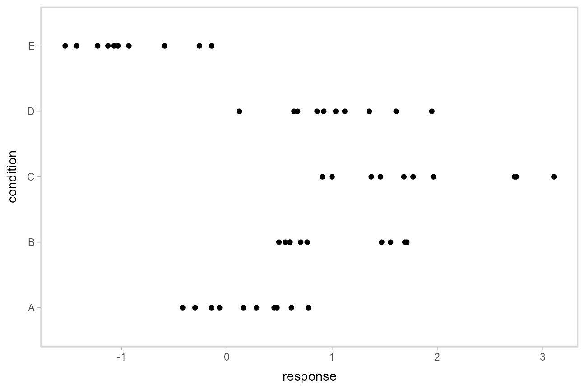
Model
Let’s fit a hierarchical model with shrinkage towards a global mean:
m = brm(
response ~ (1|condition),
data = ABC,
prior = c(
prior(normal(0, 1), class = Intercept),
prior(student_t(3, 0, 1), class = sd),
prior(student_t(3, 0, 1), class = sigma)
),
control = list(adapt_delta = .99),
file = "models/tidy-brms_m.rds" # cache model (can be removed)
)The format returned by tidybayes::tidy_draws() is compatible with the posterior::draws_df() format, so posterior::summarise_draws() supports it. Thus, we can use posterior::summarise_draws() to get a quick look at draws from the model:
## # A tibble: 15 x 10
## variable mean median sd mad q5 q95 rhat ess_bulk ess_tail
## <chr> <dbl> <dbl> <dbl> <dbl> <dbl> <dbl> <dbl> <dbl> <dbl>
## 1 b_Intercept 0.504 0.526 0.478 4.56e-1 -0.310 1.26 1.00 904. 1204.
## 2 sd_condition__Interc~ 1.17 1.09 0.428 3.57e-1 0.651 1.94 1.00 944. 1542.
## 3 sigma 0.561 0.557 0.0602 5.89e-2 0.470 0.668 1.00 2057. 2243.
## 4 r_condition[A,Interc~ -0.312 -0.336 0.498 4.80e-1 -1.08 0.526 1.00 972. 1267.
## 5 r_condition[B,Interc~ 0.493 0.480 0.500 4.74e-1 -0.301 1.34 1.00 983. 1326.
## 6 r_condition[C,Interc~ 1.33 1.32 0.501 4.78e-1 0.557 2.19 1.00 994. 1489.
## 7 r_condition[D,Interc~ 0.512 0.498 0.502 4.77e-1 -0.277 1.36 1.00 1013. 1396.
## 8 r_condition[E,Interc~ -1.39 -1.40 0.500 4.68e-1 -2.17 -0.535 1.00 990. 1392.
## 9 lp__ -51.9 -51.6 2.41 2.33e+0 -56.3 -48.7 1.00 977. 1634.
## 10 accept_stat__ 0.988 0.995 0.0211 6.66e-3 0.952 1.00 1.05 59.5 192.
## 11 stepsize__ 0.0544 0.0549 0.0119 1.62e-2 0.0393 0.0684 NA NA NA
## 12 treedepth__ 5.31 5 1.01 1.48e+0 4 7 1.07 40.9 NA
## 13 n_leapfrog__ 65.9 63 42.8 4.74e+1 15 127 1.07 41.6 NA
## 14 divergent__ 0 0 0 0 0 0 NA NA NA
## 15 energy__ 55.9 55.6 3.14 3.03e+0 51.6 61.7 1.00 1040. 1772.
Extracting draws from a fit in tidy-format using spread_rvars
Now that we have our results, the fun begins: getting the variables out in a tidy format! First, we’ll use the get_variables() function to get a list of raw model variable names so that we know what variables we can extract from the model:
## [1] "b_Intercept" "sd_condition__Intercept" "sigma"
## [4] "r_condition[A,Intercept]" "r_condition[B,Intercept]" "r_condition[C,Intercept]"
## [7] "r_condition[D,Intercept]" "r_condition[E,Intercept]" "lp__"
## [10] "accept_stat__" "stepsize__" "treedepth__"
## [13] "n_leapfrog__" "divergent__" "energy__"Here, b_Intercept is the global mean, and the r_condition[] variables are offsets from that mean for each condition. Given these variables:
r_condition[A,Intercept]r_condition[B,Intercept]r_condition[C,Intercept]r_condition[D,Intercept]r_condition[E,Intercept]
We might want a data frame where each row is a random variable (rvar) representing all draws from r_condition[A,Intercept], r_condition[B,Intercept], ...[C,...], ...[D,...], or ...[E,...]. That would allow us to easily compute quantities grouped by condition, or generate plots by condition using ggplot, or even merge draws with the original data to plot data and posteriors simultaneously.
We can do this using the spread_rvars() function. It includes a simple specification format that we can use to extract variables and their indices into tidy-format data frames. This function is analogous to spread_draws() from the tidy-data-frames-of-draws workflow described in vignette("tidy-brms").
Gathering variable indices into a separate column in a tidy format data frame
Given a variable in the model like this:
r_condition[D,Intercept]
We can provide spread_rvars() with a column specification like this:
r_condition[condition,term]
Where condition corresponds to D and term corresponds to Intercept. There is nothing too magical about what spread_rvars() does with this specification: under the hood, it splits the variable indices by commas and spaces (you can split by other characters by changing the sep argument). It lets you assign columns to the resulting indices in order. So r_condition[D,Intercept] has indices D and Intercept, and spread_rvars() lets us extract these indices as columns in the resulting tidy data frame of draws from r_condition:
m %>%
spread_rvars(r_condition[condition,term])## # A tibble: 5 x 3
## condition term r_condition
## <chr> <chr> <rvar>
## 1 A Intercept -0.31 ± 0.5
## 2 B Intercept 0.49 ± 0.5
## 3 C Intercept 1.33 ± 0.5
## 4 D Intercept 0.51 ± 0.5
## 5 E Intercept -1.39 ± 0.5The r_condition column above is a posterior::rvar() datatype, which is an array-like datatype representing draws from a random variable:
m %>%
spread_rvars(r_condition[condition,term]) %>%
pull(r_condition)## rvar<1000,4>[5] mean ± sd:
## [1] -0.31 ± 0.5 0.49 ± 0.5 1.33 ± 0.5 0.51 ± 0.5 -1.39 ± 0.5In this case, for each of the 5 elements of this rvar vector, we have 1000 draws from each of 4 chains in the model. For more on the rvar datatype, see vignette("rvar", package = "posterior").
We can choose whatever names we want for the index columns; e.g.:
m %>%
spread_rvars(r_condition[c,t])## # A tibble: 5 x 3
## c t r_condition
## <chr> <chr> <rvar>
## 1 A Intercept -0.31 ± 0.5
## 2 B Intercept 0.49 ± 0.5
## 3 C Intercept 1.33 ± 0.5
## 4 D Intercept 0.51 ± 0.5
## 5 E Intercept -1.39 ± 0.5But the more descriptive and less cryptic names from the previous example are probably preferable.
If we leave off the name for an index, it is left “nested” in the column. For example, we could nest the term since it only has one value "Intercept" anyway:
m %>%
spread_rvars(r_condition[condition,])## # A tibble: 5 x 2
## condition r_condition[,1]
## <chr> <rvar[,1]>
## 1 A -0.31 ± 0.5
## 2 B 0.49 ± 0.5
## 3 C 1.33 ± 0.5
## 4 D 0.51 ± 0.5
## 5 E -1.39 ± 0.5Or we could nest the condition, though this is probably not that useful practically:
m %>%
spread_rvars(r_condition[,term])## # A tibble: 1 x 2
## term r_condition[,1] [,2] [,3] [,4] [,5]
## <chr> <rvar[,1]> <rvar[,1]> <rvar[,1]> <rvar[,1]> <rvar[,1]>
## 1 Intercept -0.31 ± 0.5 0.49 ± 0.5 1.3 ± 0.5 0.51 ± 0.5 -1.4 ± 0.5Point summaries and intervals
With simple model variables
tidybayes provides a family of functions for generating point summaries and intervals from draws in a tidy format. These functions follow the naming scheme [median|mean|mode]_[qi|hdi], for example, median_qi(), mean_qi(), mode_hdi(), and so on. The first name (before the _) indicates the type of point summary, and the second name indicates the type of interval. qi yields a quantile interval (a.k.a. equi-tailed interval, central interval, or percentile interval) and hdi yields a highest (posterior) density interval. Custom point summary or interval functions can also be applied using the point_interval() function.
For example, we might extract the draws corresponding to posterior distributions of the overall mean and standard deviation of observations:
m %>%
spread_rvars(b_Intercept, sigma)## # A tibble: 1 x 2
## b_Intercept sigma
## <rvar> <rvar>
## 1 0.5 ± 0.48 0.56 ± 0.06Like with r_condition[condition,term], this gives us a tidy data frame. If we want the median and 95% quantile interval of the variables, we can apply median_qi():
m %>%
spread_rvars(b_Intercept, sigma) %>%
median_qi(b_Intercept, sigma)## # A tibble: 1 x 9
## b_Intercept b_Intercept.lower b_Intercept.upper sigma sigma.lower sigma.upper .width .point
## <dbl> <dbl> <dbl> <dbl> <dbl> <dbl> <dbl> <chr>
## 1 0.526 -0.490 1.41 0.557 0.456 0.696 0.95 median
## # ... with 1 more variable: .interval <chr>We can specify the columns we want to get medians and intervals from, as above, or if we omit the list of columns, median_qi() will use every column that is not a grouping column. Thus in the above example, b_Intercept and sigma are redundant arguments to median_qi() because they are also the only columns we gathered from the model. So we can simplify this to:
m %>%
spread_rvars(b_Intercept, sigma) %>%
median_qi()## # A tibble: 1 x 9
## b_Intercept b_Intercept.lower b_Intercept.upper sigma sigma.lower sigma.upper .width .point
## <dbl> <dbl> <dbl> <dbl> <dbl> <dbl> <dbl> <chr>
## 1 0.526 -0.490 1.41 0.557 0.456 0.696 0.95 median
## # ... with 1 more variable: .interval <chr>If you would rather have a long-format list, use gather_rvars() instead:
m %>%
gather_rvars(b_Intercept, sigma)## # A tibble: 2 x 2
## .variable .value
## <chr> <rvar>
## 1 b_Intercept 0.50 ± 0.48
## 2 sigma 0.56 ± 0.06We could also use median_qi() here:
m %>%
gather_rvars(b_Intercept, sigma) %>%
median_qi(.value)## # A tibble: 2 x 7
## .variable .value .lower .upper .width .point .interval
## <chr> <dbl> <dbl> <dbl> <dbl> <chr> <chr>
## 1 b_Intercept 0.526 -0.490 1.41 0.95 median qi
## 2 sigma 0.557 0.456 0.696 0.95 median qiWith indexed model variables
When we have a model variable with one or more indices, such as r_condition, we can apply median_qi() (or other functions in the point_interval() family) as we did before:
m %>%
spread_rvars(r_condition[condition,]) %>%
median_qi(r_condition)## # A tibble: 5 x 7
## condition r_condition .lower .upper .width .point .interval
## <chr> <dbl> <dbl> <dbl> <dbl> <chr> <chr>
## 1 A -0.336 -1.23 0.734 0.95 median qi
## 2 B 0.480 -0.441 1.54 0.95 median qi
## 3 C 1.32 0.406 2.38 0.95 median qi
## 4 D 0.498 -0.443 1.55 0.95 median qi
## 5 E -1.40 -2.36 -0.396 0.95 median qiNote for existing users of spread_draws(): you may notice that spread_rvars() requires us to be a bit more explicit in passing column names to median_qi(). This is because spread_rvars() does not return pre-grouped data frames, unlike spread_draws() — since every row would always be its own group in the output from spread_rvars(), returning a pre-grouped data frame would be redundant.
You can also use posterior::summarise_draws() on an rvar column to generate summaries with convergence diagnostics. That function returns a data frame, which can be passed directly into the dplyr::mutate() function:
m %>%
spread_rvars(r_condition[condition,]) %>%
mutate(summarise_draws(r_condition))## # A tibble: 5 x 12
## condition r_condition[,1] variable mean median sd mad q5 q95 rhat ess_bulk ess_tail
## <chr> <rvar[,1]> <chr> <dbl> <dbl> <dbl> <dbl> <dbl> <dbl> <dbl> <dbl> <dbl>
## 1 A -0.31 ± 0.5 r_condi~ -0.312 -0.336 0.498 0.480 -1.08 0.526 1.00 972. 1267.
## 2 B 0.49 ± 0.5 r_condi~ 0.493 0.480 0.500 0.474 -0.301 1.34 1.00 983. 1326.
## 3 C 1.33 ± 0.5 r_condi~ 1.33 1.32 0.501 0.478 0.557 2.19 1.00 994. 1489.
## 4 D 0.51 ± 0.5 r_condi~ 0.512 0.498 0.502 0.477 -0.277 1.36 1.00 1013. 1396.
## 5 E -1.39 ± 0.5 r_condi~ -1.39 -1.40 0.500 0.468 -2.17 -0.535 1.00 990. 1392.Combining variables with different indices in a single tidy format data frame
spread_rvars() and gather_rvars() support extracting variables that have different indices into the same data frame. Indices with the same name are automatically matched up, and values are duplicated as necessary to produce one row for every combination of levels of all indices. For example, we might want to calculate the mean within each condition (call this condition_mean). In this model, that mean is the intercept (b_Intercept) plus the effect for a given condition (r_condition).
We can gather draws from b_Intercept and r_condition together in a single data frame:
m %>%
spread_rvars(b_Intercept, r_condition[condition,])## # A tibble: 5 x 3
## b_Intercept condition r_condition[,1]
## <rvar> <chr> <rvar[,1]>
## 1 0.5 ± 0.48 A -0.31 ± 0.5
## 2 0.5 ± 0.48 B 0.49 ± 0.5
## 3 0.5 ± 0.48 C 1.33 ± 0.5
## 4 0.5 ± 0.48 D 0.51 ± 0.5
## 5 0.5 ± 0.48 E -1.39 ± 0.5Within each draw, b_Intercept is repeated as necessary to correspond to every index of r_condition. Thus, the mutate function from dplyr can be used to find their sum, condition_mean (which is the mean for each condition):
m %>%
spread_rvars(`b_Intercept`, r_condition[condition,Intercept]) %>%
mutate(condition_mean = b_Intercept + r_condition)## # A tibble: 5 x 5
## b_Intercept condition Intercept r_condition condition_mean
## <rvar> <chr> <chr> <rvar> <rvar>
## 1 0.5 ± 0.48 A Intercept -0.31 ± 0.5 0.19 ± 0.18
## 2 0.5 ± 0.48 B Intercept 0.49 ± 0.5 1.00 ± 0.18
## 3 0.5 ± 0.48 C Intercept 1.33 ± 0.5 1.84 ± 0.17
## 4 0.5 ± 0.48 D Intercept 0.51 ± 0.5 1.02 ± 0.18
## 5 0.5 ± 0.48 E Intercept -1.39 ± 0.5 -0.88 ± 0.18Plotting point summaries and intervals
Plotting point summaries and intervals is straightforward using ggdist::stat_dist_pointinterval(), which will produce visualizations with 66% and 95% intervals by default:
m %>%
spread_rvars(b_Intercept, r_condition[condition,]) %>%
mutate(condition_mean = b_Intercept + r_condition) %>%
ggplot(aes(y = condition, dist = condition_mean)) +
stat_dist_pointinterval()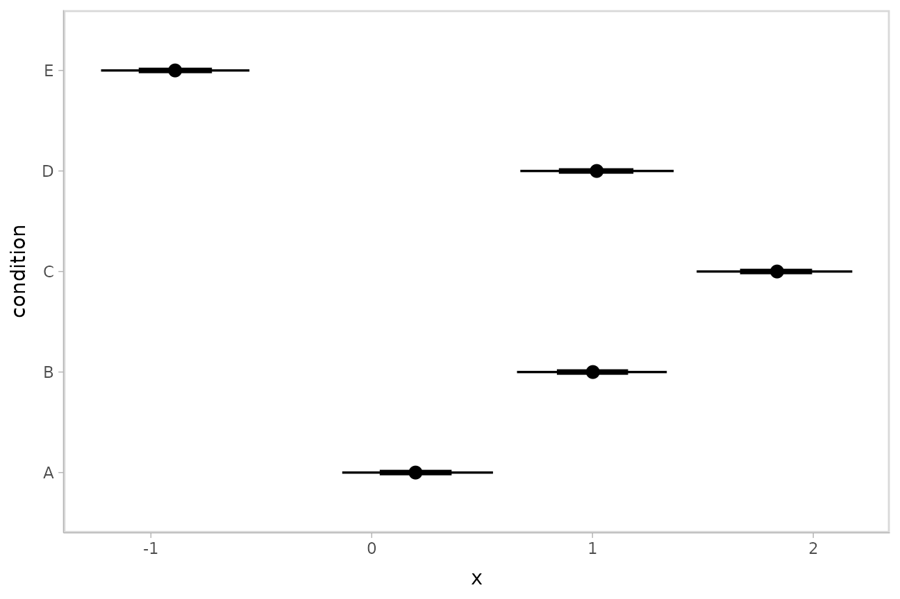
You can use any number of intervals you want by passing the interval sizes to the .width parameter; for example, 50%, 80%, and 95% intervals:
m %>%
spread_rvars(b_Intercept, r_condition[condition,]) %>%
mutate(condition_mean = b_Intercept + r_condition) %>%
ggplot(aes(y = condition, dist = condition_mean)) +
stat_dist_pointinterval(.width = c(.50, .80, .95)) +
# three intervals gets a bit ridiculous and is not really recommended;
# we can adjust the size scale to make them easier to see:
scale_size_continuous(range = c(1,10))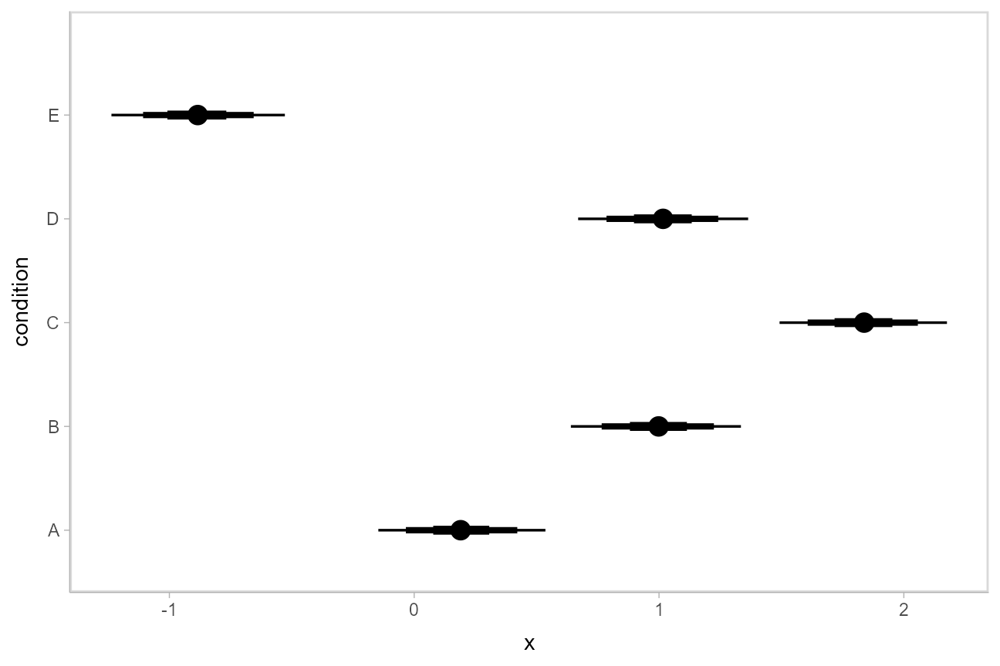
median_qi() and its sister functions can also produce an arbitrary number of probability intervals by setting the .width = argument:
m %>%
spread_rvars(b_Intercept, r_condition[condition,]) %>%
median_qi(condition_mean = b_Intercept + r_condition, .width = c(.95, .8, .5))## # A tibble: 15 x 9
## b_Intercept condition r_condition[,1] condition_mean .lower .upper .width .point .interval
## <rvar> <chr> <rvar[,1]> <dbl> <dbl> <dbl> <dbl> <chr> <chr>
## 1 0.5 ± 0.48 A -0.31 ± 0.5 0.190 -0.146 0.536 0.95 median qi
## 2 0.5 ± 0.48 B 0.49 ± 0.5 0.998 0.640 1.33 0.95 median qi
## 3 0.5 ± 0.48 C 1.33 ± 0.5 1.84 1.49 2.18 0.95 median qi
## 4 0.5 ± 0.48 D 0.51 ± 0.5 1.02 0.670 1.36 0.95 median qi
## 5 0.5 ± 0.48 E -1.39 ± 0.5 -0.884 -1.24 -0.528 0.95 median qi
## 6 0.5 ± 0.48 A -0.31 ± 0.5 0.190 -0.0340 0.421 0.8 median qi
## 7 0.5 ± 0.48 B 0.49 ± 0.5 0.998 0.766 1.22 0.8 median qi
## 8 0.5 ± 0.48 C 1.33 ± 0.5 1.84 1.61 2.06 0.8 median qi
## 9 0.5 ± 0.48 D 0.51 ± 0.5 1.02 0.786 1.24 0.8 median qi
## 10 0.5 ± 0.48 E -1.39 ± 0.5 -0.884 -1.11 -0.656 0.8 median qi
## 11 0.5 ± 0.48 A -0.31 ± 0.5 0.190 0.0778 0.307 0.5 median qi
## 12 0.5 ± 0.48 B 0.49 ± 0.5 0.998 0.881 1.11 0.5 median qi
## 13 0.5 ± 0.48 C 1.33 ± 0.5 1.84 1.72 1.95 0.5 median qi
## 14 0.5 ± 0.48 D 0.51 ± 0.5 1.02 0.898 1.13 0.5 median qi
## 15 0.5 ± 0.48 E -1.39 ± 0.5 -0.884 -1.01 -0.767 0.5 median qiThe results are in a tidy format: one row per group and uncertainty interval width (.width). This facilitates plotting, and is essentially what ggdist::stat_dist_pointinterval() is doing for you under the hood above. For example, assigning -.width to the size aesthetic will show all intervals, making thicker lines correspond to smaller intervals.
While using stat_dist_pointinterval() is usually easier, if you wish to manually construct the above plot by using median_qi() first, the ggdist::geom_pointinterval() geom automatically sets the size aesthetic appropriately based on the .width column in the data to produce plots of points with multiple probability levels:
m %>%
spread_rvars(b_Intercept, r_condition[condition,]) %>%
median_qi(condition_mean = b_Intercept + r_condition, .width = c(.95, .66)) %>%
ggplot(aes(y = condition, x = condition_mean, xmin = .lower, xmax = .upper)) +
geom_pointinterval() 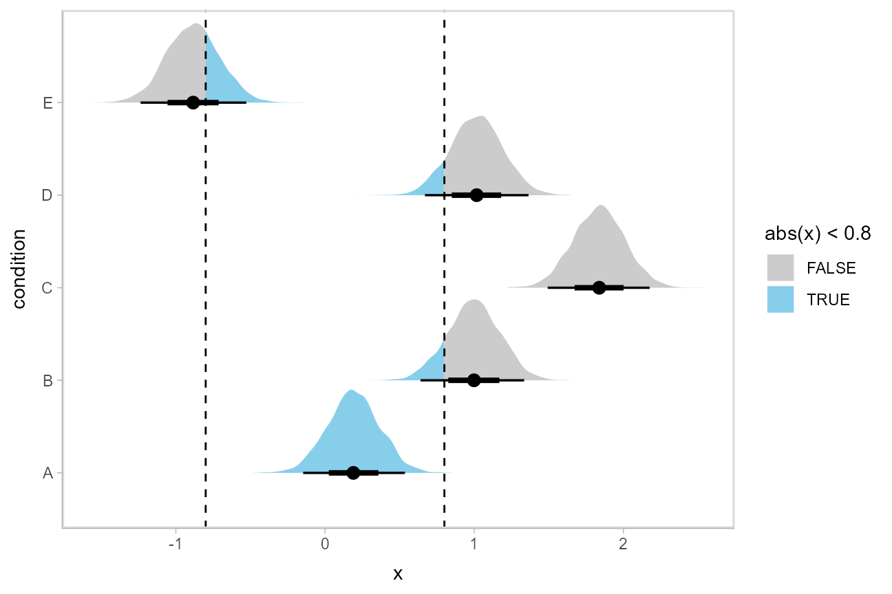
Intervals with densities
To see the density along with the intervals, we can use ggdist::stat__dist_eye() (“eye plots”, which combine intervals with violin plots), or ggdist::stat_dist_halfeye() (interval + density plots):
m %>%
spread_rvars(b_Intercept, r_condition[condition,]) %>%
mutate(condition_mean = b_Intercept + r_condition) %>%
ggplot(aes(y = condition, dist = condition_mean)) +
stat_dist_halfeye()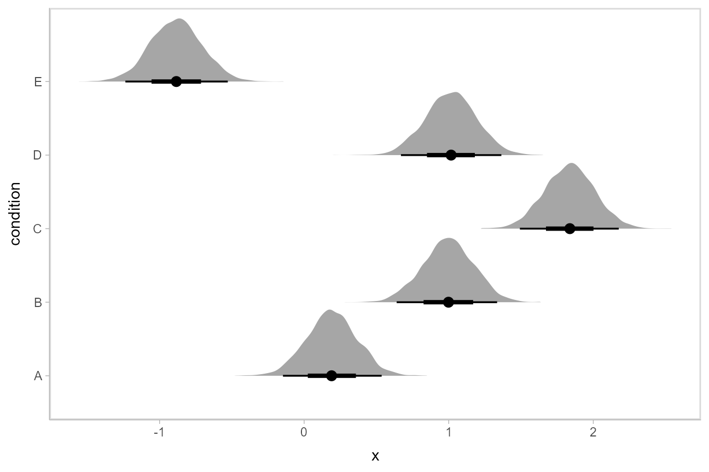
Or say you want to annotate portions of the densities in color; the fill aesthetic can vary within a slab in all geoms and stats in the ggdist::geom_slabinterval() family, including ggdist::stat_dist_halfeye(). For example, if you want to annotate a domain-specific region of practical equivalence (ROPE), you could do something like this:
m %>%
spread_rvars(b_Intercept, r_condition[condition,]) %>%
mutate(condition_mean = b_Intercept + r_condition) %>%
ggplot(aes(y = condition, dist = condition_mean, fill = stat(abs(x) < .8))) +
stat_dist_halfeye() +
geom_vline(xintercept = c(-.8, .8), linetype = "dashed") +
scale_fill_manual(values = c("gray80", "skyblue"))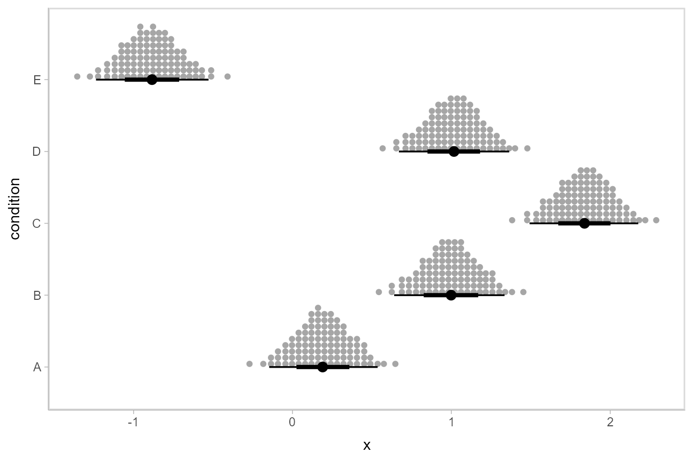
Other visualizations of distributions: stat_dist_slabinterval
There are a variety of additional stats for visualizing distributions in the ggdist::stat_dist_slabinterval() family of stats and geoms:

See vignette("slabinterval", package = "ggdist") for an overview. All geoms that start with stat_dist_... support the use of rvar columns in the dist aesthetic.
Posterior fits
Rather than calculating conditional means manually as in the previous example, we could use add_epred_draws(), which is analogous to brms::posterior_epred(), giving posterior draws from posterior distributions of the mean of the response (i.e. the distribution of the expected value of the posterior predictive). We can combine it with modelr::data_grid() to first generate a grid describing the fits we want, then populate that grid with rvars representing draws from the posterior:
ABC %>%
data_grid(condition) %>%
add_epred_rvars(m)## # A tibble: 5 x 2
## condition .epred
## <chr> <rvar>
## 1 A 0.19 ± 0.18
## 2 B 1.00 ± 0.18
## 3 C 1.84 ± 0.17
## 4 D 1.02 ± 0.18
## 5 E -0.88 ± 0.18We can use stat_dist_pointinterval() as before to plot the conditional means:
ABC %>%
data_grid(condition) %>%
add_epred_rvars(m) %>%
ggplot(aes(dist = .epred, y = condition)) +
stat_dist_pointinterval()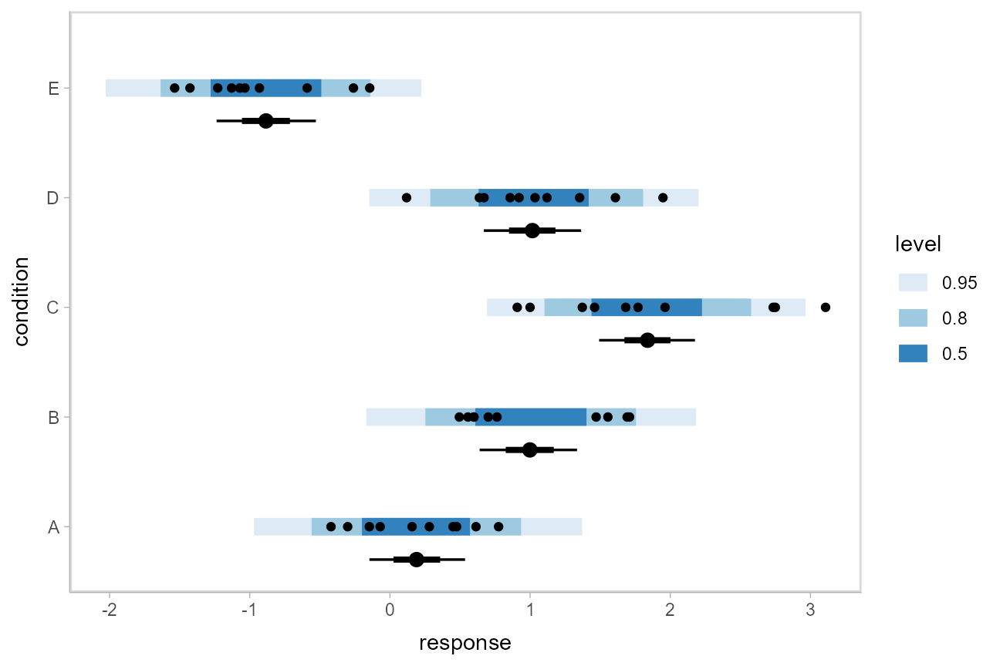
Quantile dotplots
Intervals are nice if the alpha level happens to line up with whatever decision you are trying to make, but getting a shape of the posterior is better (hence eye plots, above). On the other hand, making inferences from density plots is imprecise (estimating the area of one shape as a proportion of another is a hard perceptual task). Reasoning about probability in frequency formats is easier, motivating quantile dotplots (Kay et al. 2016, Fernandes et al. 2018), which also allow precise estimation of arbitrary intervals (down to the dot resolution of the plot, 100 in the example below).
Within the slabinterval family of geoms in tidybayes is the dots and dotsinterval family, which automatically determine appropriate bin sizes for dotplots and can calculate quantiles from samples to construct quantile dotplots. ggdist::stat_dist_dots() and ggdist::stat_dist_dotsinterval() are the variants designed for use on rvars:
ABC %>%
data_grid(condition) %>%
add_epred_rvars(m) %>%
ggplot(aes(dist = .epred, y = condition)) +
stat_dist_dotsinterval(quantiles = 100)
The idea is to get away from thinking about the posterior as indicating one canonical point or interval, but instead to represent it as (say) 100 approximately equally likely points.
Posterior predictions
Where add_epred_rvars() is analogous to brms::posterior_epred(), add_predicted_rvars() is analogous to brms::posterior_predict(), giving draws from the posterior predictive distribution.
Here is an example of posterior predictive distributions plotted using ggdist::stat_dist_slab():
ABC %>%
data_grid(condition) %>%
add_predicted_rvars(m) %>%
ggplot(aes(dist = .prediction, y = condition)) +
stat_dist_slab() 
We could also use ggdist::stat_dist_interval() to plot predictive bands alongside the data:
ABC %>%
data_grid(condition) %>%
add_predicted_rvars(m) %>%
ggplot(aes(y = condition)) +
stat_dist_interval(aes(dist = .prediction), .width = c(.50, .80, .95, .99)) +
geom_point(aes(x = response), data = ABC) +
scale_color_brewer()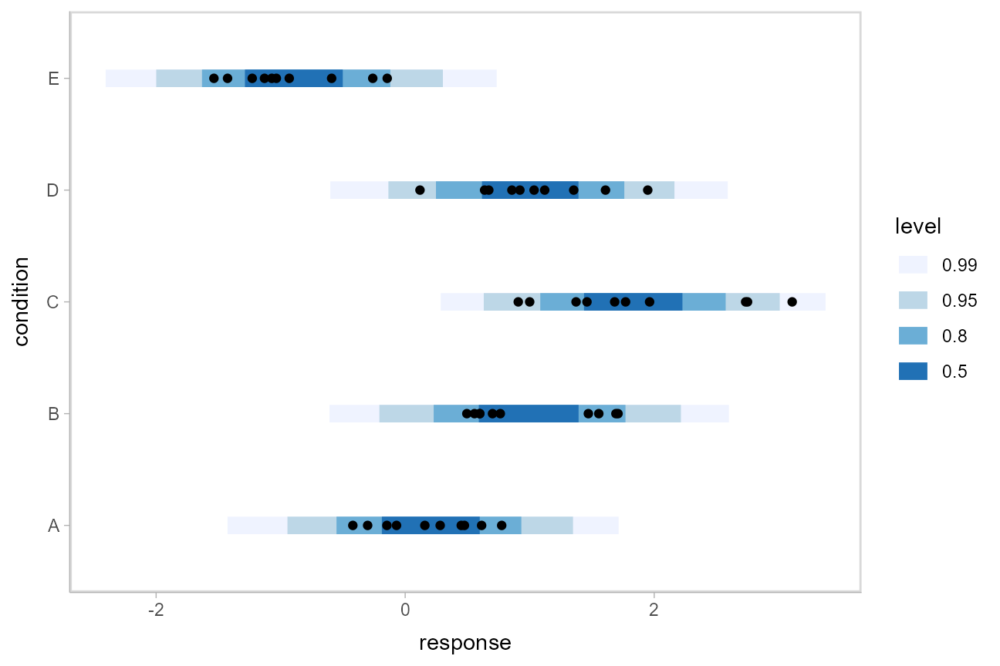
The add_XXX_rvars() functions can be chained together to add posterior predictions (predicted_rvars) and the distribution of the mean of the posterior predictive (epred_rvars) to the same data frame. This makes it easy to plot both together alongside the data:
ABC %>%
data_grid(condition) %>%
add_epred_rvars(m) %>%
add_predicted_rvars(m) %>%
ggplot(aes(y = condition)) +
stat_dist_interval(aes(dist = .prediction)) +
stat_dist_pointinterval(aes(dist = .epred), position = position_nudge(y = -0.3)) +
geom_point(aes(x = response), data = ABC) +
scale_color_brewer()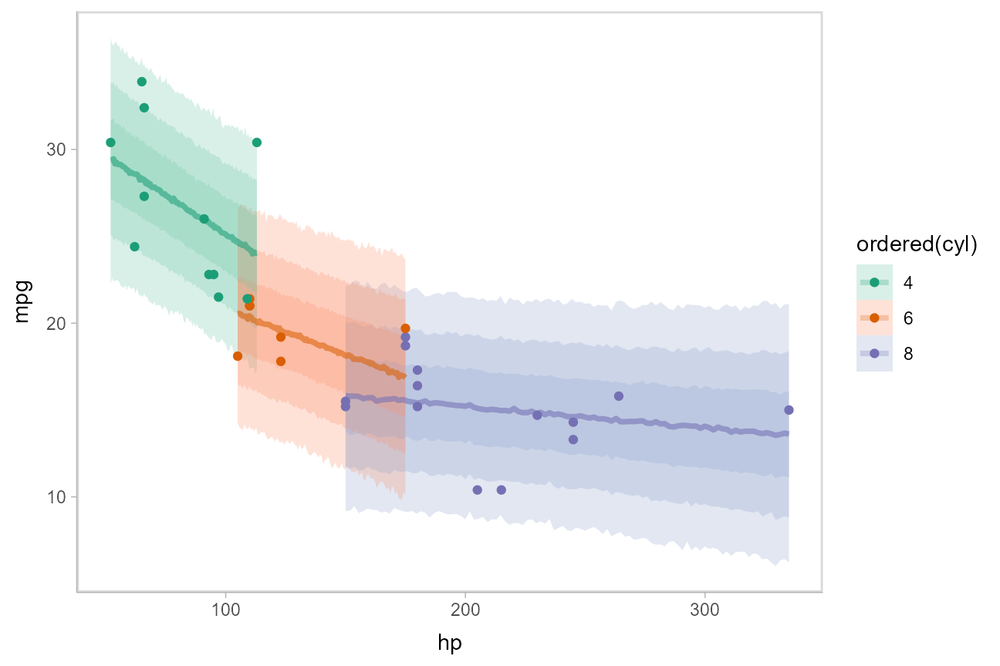
Posterior predictions, Kruschke-style
The above approach to posterior predictions integrates over the parameter uncertainty to give a single posterior predictive distribution. Another approach, often used by John Kruschke in his book Doing Bayesian Data Analysis, is to attempt to show both the predictive uncertainty and the parameter uncertainty simultaneously by showing several possible predictive distributions implied by the posterior.
We can do this pretty easily by asking for the distributional parameters for a given prediction implied by the posterior. We’ll do it explicitly here by setting dpar = c("mu", "sigma") in add_epred_draws(). Rather than specifying the parameters explicitly, you can also just set dpar = TRUE to get draws from all distributional parameters in a model, and this will work for any response distribution supported by brms::brm():
ABC %>%
data_grid(condition) %>%
add_epred_rvars(m, dpar = c("mu", "sigma"))## # A tibble: 5 x 4
## condition .epred mu sigma
## <chr> <rvar> <rvar> <rvar>
## 1 A 0.19 ± 0.18 0.19 ± 0.18 0.56 ± 0.06
## 2 B 1.00 ± 0.18 1.00 ± 0.18 0.56 ± 0.06
## 3 C 1.84 ± 0.17 1.84 ± 0.17 0.56 ± 0.06
## 4 D 1.02 ± 0.18 1.02 ± 0.18 0.56 ± 0.06
## 5 E -0.88 ± 0.18 -0.88 ± 0.18 0.56 ± 0.06At this point, we will need to use the “long-data-frame-of-draws” format more typical of the standard tidybayes workflow. What we want to do is select a small number of draws from the joint distribution of mu and sigma to plot predictive densities from. We will use unnest_rvars() to “unnest” all the rvars in the above output into a long-format data frame, sample 30 of the draws using sample_draws(), and then use ggdist::stat_dist_slab() to visualize each predictive distribution implied by the values of mu and sigma:
ABC %>%
data_grid(condition) %>%
add_epred_rvars(m, dpar = c("mu", "sigma")) %>%
unnest_rvars() %>%
sample_draws(30) %>%
ggplot(aes(y = condition)) +
stat_dist_slab(
aes(dist = dist_normal(mu, sigma)),
color = "gray65", alpha = 1/10, fill = NA
) +
geom_point(aes(x = response), data = ABC, shape = 21, fill = "#9ECAE1", size = 2)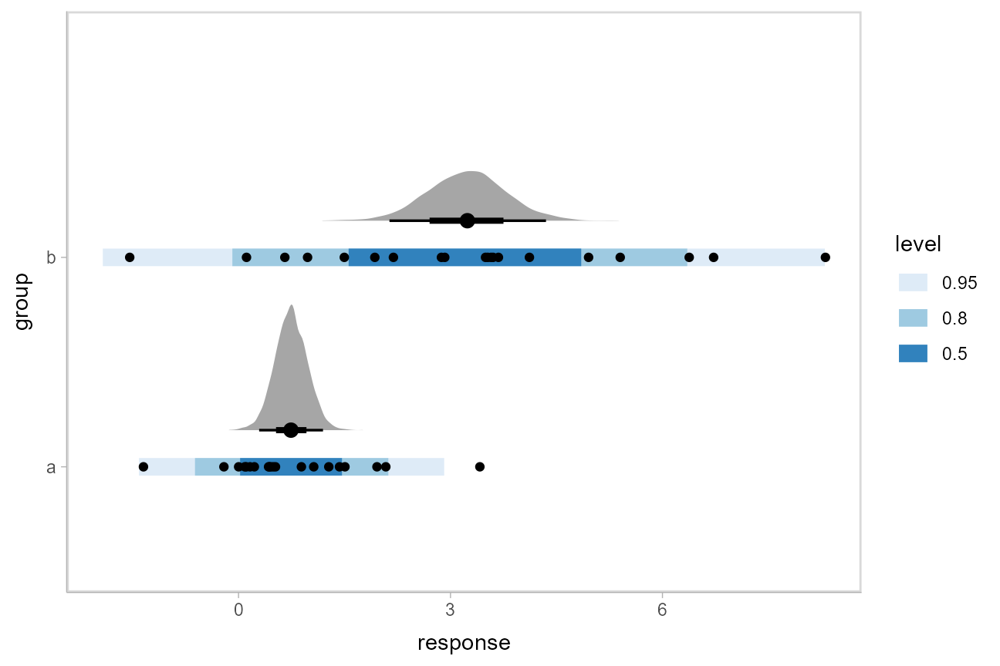
For a more detailed description of these charts (and some useful variations on them), see Solomon Kurz’s excellent blog post on the topic.
We could even combine the Kruschke-style plots of predictive distributions with half-eyes showing the posterior means:
ABC %>%
data_grid(condition) %>%
add_epred_rvars(m, dpar = c("mu", "sigma")) %>%
ggplot(aes(x = condition)) +
stat_dist_slab(
aes(dist = dist_normal(mu, sigma)),
color = "gray65", alpha = 1/10, fill = NA,
data = . %>% unnest_rvars() %>% sample_draws(30), scale = .5
) +
stat_dist_halfeye(aes(dist = .epred), side = "left", scale = .5) +
geom_point(
aes(y = response),
data = ABC, shape = 21, fill = "#9ECAE1", size = 2,
position = position_nudge(x = -.2)
)The use of unnest_rvars() after add_epred_rvars() is essentially equivalent to just using the _draws() instead of _rvars() form of the prediction functions (e.g. add_epred_draws()), which may be faster and/or more convenient depending on what other data manipulation you need to do.
Fit/prediction curves
To demonstrate drawing fit curves with uncertainty, let’s fit a slightly naive model to part of the mtcars dataset:
m_mpg = brm(
mpg ~ hp * cyl,
data = mtcars,
file = "models/tidy-brms_m_mpg.rds" # cache model (can be removed)
)We can draw fit curves with probability bands:
mtcars %>%
group_by(cyl) %>%
data_grid(hp = seq_range(hp, n = 51)) %>%
add_epred_rvars(m_mpg) %>%
ggplot(aes(x = hp, color = ordered(cyl))) +
stat_dist_lineribbon(aes(dist = .epred)) +
geom_point(aes(y = mpg), data = mtcars) +
scale_fill_brewer(palette = "Greys") +
scale_color_brewer(palette = "Set2")Or we can sample a reasonable number of fit lines (say 100) and overplot them:
mtcars %>%
group_by(cyl) %>%
data_grid(hp = seq_range(hp, n = 101)) %>%
# NOTE: this shows the use of ndraws to subsample within add_epred_rvars()
# ONLY do this IF you are planning to make spaghetti plots, etc.
# NEVER subsample to a small sample to plot intervals, densities, etc.
add_epred_rvars(m_mpg, ndraws = 100) %>%
unnest_rvars() %>%
ggplot(aes(x = hp, y = mpg, color = ordered(cyl))) +
geom_line(aes(y = .epred, group = paste(cyl, .draw)), alpha = .1) +
geom_point(data = mtcars) +
scale_color_brewer(palette = "Dark2")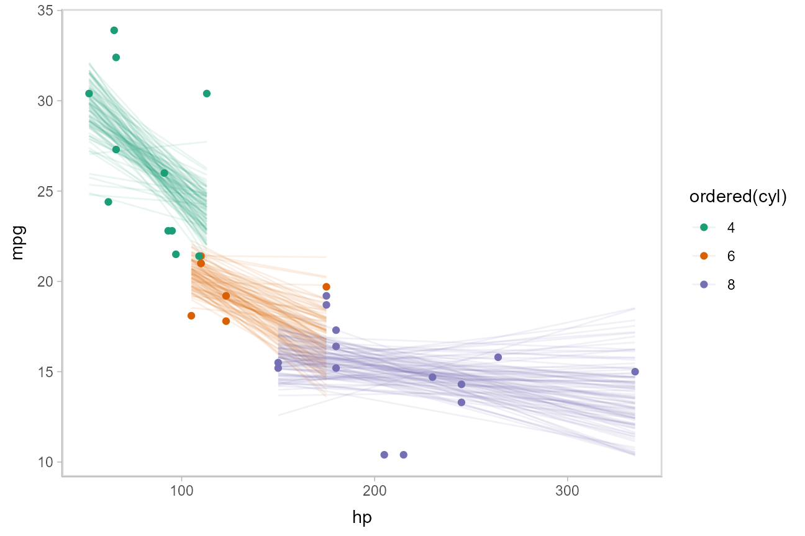
Or we can create animated hypothetical outcome plots (HOPs) of fit lines:
set.seed(123456)
ndraws = 50
p = mtcars %>%
group_by(cyl) %>%
data_grid(hp = seq_range(hp, n = 101)) %>%
# NOTE: this shows the use of ndraws to subsample within add_epred_rvars()
# ONLY do this IF you are planning to make spaghetti plots, etc.
# NEVER subsample to a small sample to plot intervals, densities, etc.
add_epred_rvars(m_mpg, ndraws = ndraws) %>%
unnest_rvars() %>%
ggplot(aes(x = hp, y = mpg, color = ordered(cyl))) +
geom_line(aes(y = .epred, group = paste(cyl, .draw))) +
geom_point(data = mtcars) +
scale_color_brewer(palette = "Dark2") +
transition_states(.draw, 0, 1) +
shadow_mark(future = TRUE, color = "gray50", alpha = 1/20)
animate(p, nframes = ndraws, fps = 2.5, width = 432, height = 288, res = 96, dev = "png", type = "cairo")
Or, for posterior predictions (instead of fits), we can go back to probability bands:
mtcars %>%
group_by(cyl) %>%
data_grid(hp = seq_range(hp, n = 101)) %>%
add_predicted_rvars(m_mpg) %>%
ggplot(aes(x = hp, color = ordered(cyl), fill = ordered(cyl))) +
stat_dist_lineribbon(aes(dist = .prediction), .width = c(.95, .80, .50), alpha = 1/4) +
geom_point(aes(y = mpg), data = mtcars) +
scale_fill_brewer(palette = "Set2") +
scale_color_brewer(palette = "Dark2")
This gets difficult to judge by group, so probably better to facet into multiple plots. Fortunately, since we are using ggplot, that functionality is built in:
mtcars %>%
group_by(cyl) %>%
data_grid(hp = seq_range(hp, n = 101)) %>%
add_predicted_rvars(m_mpg) %>%
ggplot(aes(x = hp)) +
stat_dist_lineribbon(
aes(dist = .prediction),
.width = c(.99, .95, .8, .5),
color = brewer.pal(5, "Blues")[[5]]
) +
geom_point(aes(y = mpg), data = mtcars) +
scale_fill_brewer() +
facet_grid(. ~ cyl, space = "free_x", scales = "free_x")Extracting distributional regression parameters
brms::brm() also allows us to set up submodels for parameters of the response distribution other than the location (e.g., mean). For example, we can allow a variance parameter, such as the standard deviation, to also be some function of the predictors.
This approach can be helpful in cases of non-constant variance (also called heteroskedasticity by folks who like obfuscation via Latin). E.g., imagine two groups, each with different mean response and variance:
set.seed(1234)
AB = tibble(
group = rep(c("a", "b"), each = 20),
response = rnorm(40, mean = rep(c(1, 5), each = 20), sd = rep(c(1, 3), each = 20))
)
AB %>%
ggplot(aes(x = response, y = group)) +
geom_point()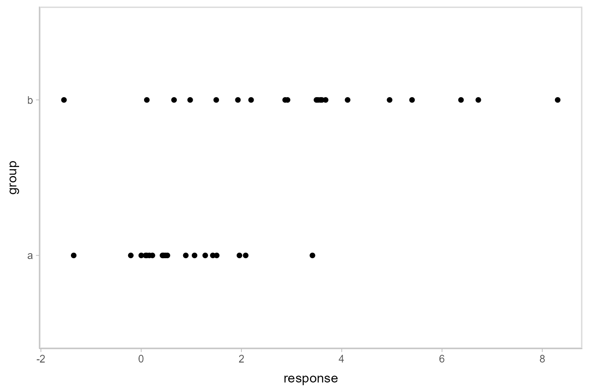
Here is a model that lets the mean and standard deviation of response be dependent on group:
m_ab = brm(
bf(
response ~ group,
sigma ~ group
),
data = AB,
file = "models/tidy-brms_m_ab.rds" # cache model (can be removed)
)We can plot the posterior distribution of the mean response alongside posterior predictive intervals and the data:
AB %>%
data_grid(group) %>%
add_epred_rvars(m_ab) %>%
add_predicted_rvars(m_ab) %>%
ggplot(aes(y = group)) +
stat_dist_halfeye(aes(dist = .epred), scale = 0.6, position = position_nudge(y = 0.175)) +
stat_dist_interval(aes(dist = .prediction)) +
geom_point(aes(x = response), data = AB) +
scale_color_brewer()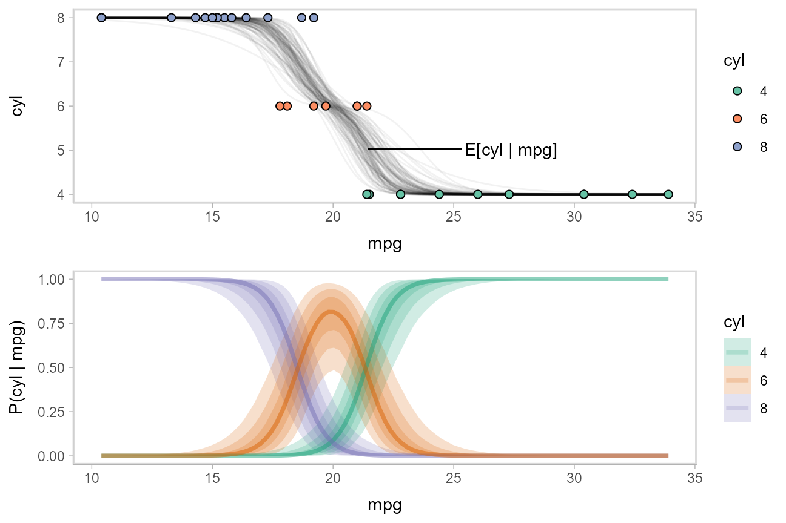
This shows posteriors of the mean of each group (black intervals and the density plots) and posterior predictive intervals (blue).
The predictive intervals in group b are larger than in group a because the model fits a different standard deviation for each group. We can see how the corresponding distributional parameter, sigma, changes by extracting it using the dpar argument to add_epred_rvars():
AB %>%
data_grid(group) %>%
add_epred_rvars(m_ab, dpar = TRUE) %>%
ggplot(aes(dist = sigma, y = group)) +
stat_dist_halfeye() +
geom_vline(xintercept = 0, linetype = "dashed")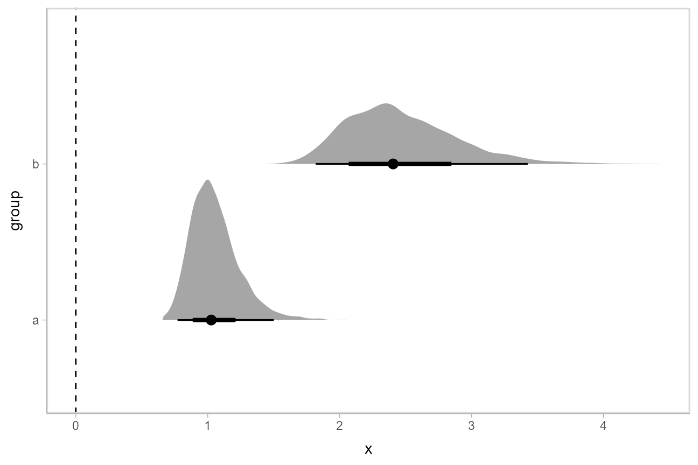
By setting dpar = TRUE, all distributional parameters are added as additional columns in the result of add_epred_rvars(); if you only want a specific parameter, you can specify it (or a list of just the parameters you want). In the above model, dpar = TRUE is equivalent to dpar = list("mu", "sigma").
Comparing levels of a factor
If we wish compare the means from each condition, compare_levels() facilitates comparisons of the value of some variable across levels of a factor. By default it computes all pairwise differences.
Let’s demonstrate compare_levels() with ggdist::stat_halfeye():
m %>%
spread_rvars(r_condition[condition,]) %>%
compare_levels(r_condition, by = condition) %>%
ggplot(aes(y = condition, dist = r_condition)) +
stat_dist_halfeye()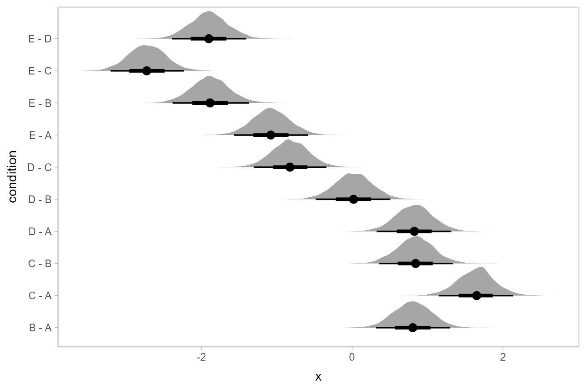
If you prefer “caterpillar” plots, ordered by something like the mean of the difference, you can reorder the factor before plotting:
m %>%
spread_rvars(r_condition[condition,]) %>%
compare_levels(r_condition, by = condition) %>%
ungroup() %>%
mutate(condition = reorder(condition, r_condition)) %>%
ggplot(aes(y = condition, dist = r_condition)) +
stat_dist_halfeye() +
geom_vline(xintercept = 0, linetype = "dashed") 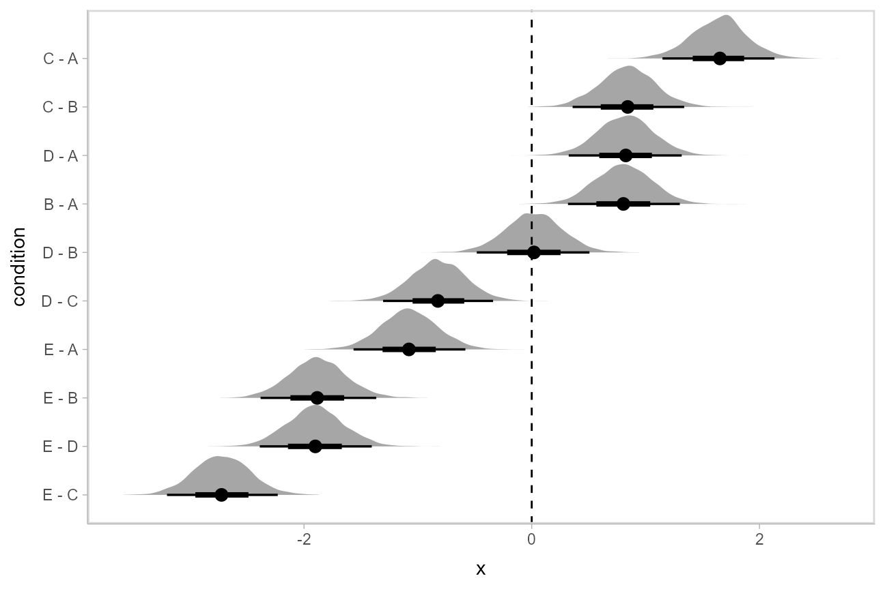
Ordinal models
The brms::posterior_epred() function for ordinal and multinomial regression models in brms returns multidimensional variables for each draw, where an additional dimension to the result contains outcome categories. The philosophy of tidybayes is to tidy whatever format is output by a model, so in keeping with that philosophy, when applied to ordinal and multinomial brms models, add_epred_draws() outputs a nested .epred variable that has additional columns for each level of the response variable.
Ordinal model with continuous predictor
We’ll fit a model using the mtcars dataset that predicts the number of cylinders in a car given the car’s mileage (in miles per gallon). While this is a little backwards causality-wise (presumably the number of cylinders causes the mileage, if anything), that does not mean this is not a fine prediction task (I could probably tell someone who knows something about cars the MPG of a car and they could do reasonably well at guessing the number of cylinders in the engine).
Before we fit the model, let’s clean the dataset by making the cyl column an ordered factor (by default it is just a number):
## mpg cyl disp hp drat wt qsec vs am gear carb
## Mazda RX4 21.0 6 160 110 3.90 2.620 16.46 0 1 4 4
## Mazda RX4 Wag 21.0 6 160 110 3.90 2.875 17.02 0 1 4 4
## Datsun 710 22.8 4 108 93 3.85 2.320 18.61 1 1 4 1
## Hornet 4 Drive 21.4 6 258 110 3.08 3.215 19.44 1 0 3 1
## Hornet Sportabout 18.7 8 360 175 3.15 3.440 17.02 0 0 3 2
## Valiant 18.1 6 225 105 2.76 3.460 20.22 1 0 3 1Then we’ll fit an ordinal regression model:
m_cyl = brm(
cyl ~ mpg,
data = mtcars_clean,
family = cumulative,
seed = 58393,
file = "models/tidy-brms_m_cyl.rds" # cache model (can be removed)
)add_epred_rvars() will now return a matrix instead of a vector for the .epred column, where the nested columns of .epred are the probability that the response is in that category. For example, here is the fit for two values of mpg in the dataset:
tibble(mpg = c(21,22)) %>%
add_epred_rvars(m_cyl)## # A tibble: 2 x 2
## mpg .epred[,"4"] [,"6"] [,"8"]
## <dbl> <rvar[,1]> <rvar[,1]> <rvar[,1]>
## 1 21 0.36 ± 0.16 0.61 ± 0.16 0.027 ± 0.035
## 2 22 0.72 ± 0.16 0.27 ± 0.16 0.008 ± 0.015This format can be useful in some cases, but for our immediate purposes it would be better to have the prediction for each category be on a separate row. We can use the columns_to parameter of add_epred_rvars() to move the nested column headers into values of a column (here "cyl"). This will also add a .row column indexing which row of the input data frame each prediction came from:
tibble(mpg = c(21,22)) %>%
add_epred_rvars(m_cyl, columns_to = "cyl")## # A tibble: 6 x 4
## mpg .row cyl .epred
## <dbl> <int> <chr> <rvar>
## 1 21 1 4 0.360 ± 0.162
## 2 22 2 4 0.722 ± 0.164
## 3 21 1 6 0.613 ± 0.164
## 4 22 2 6 0.270 ± 0.159
## 5 21 1 8 0.027 ± 0.035
## 6 22 2 8 0.008 ± 0.015Note: for the cyl variable to retain its original factor level names you must be using brms greater than or equal to version 2.15.9.
We could plot fit lines for fitted probabilities against the dataset:
data_plot = mtcars_clean %>%
ggplot(aes(x = mpg, y = cyl, color = cyl)) +
geom_point() +
scale_color_brewer(palette = "Dark2", name = "cyl")
fit_plot = mtcars_clean %>%
data_grid(mpg = seq_range(mpg, n = 101)) %>%
add_epred_rvars(m_cyl, value = "P(cyl | mpg)", columns_to = "cyl") %>%
ggplot(aes(x = mpg, color = cyl)) +
stat_dist_lineribbon(aes(dist = `P(cyl | mpg)`, fill = cyl), alpha = 1/5) +
scale_color_brewer(palette = "Dark2") +
scale_fill_brewer(palette = "Dark2") +
labs(y = "P(cyl | mpg)")
plot_grid(ncol = 1, align = "v",
data_plot,
fit_plot
)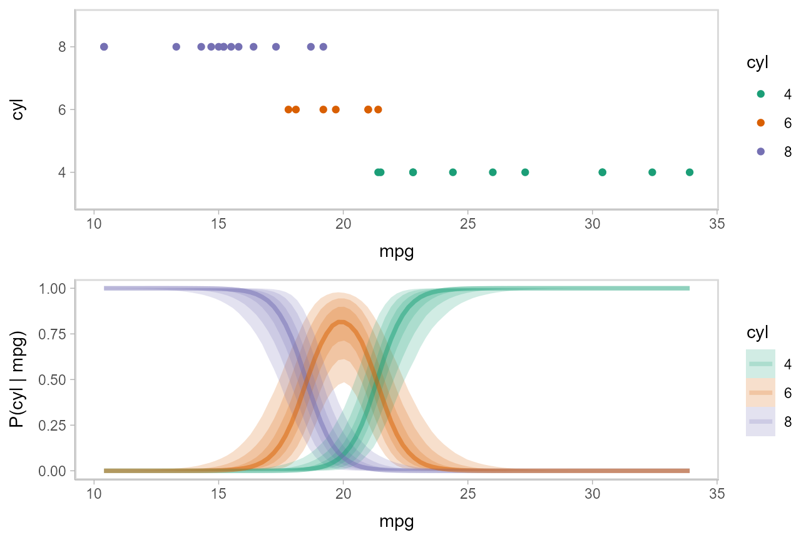
The above display does not let you see the correlation between P(cyl|mpg) for different values of cyl at a particular value of mpg. For example, in the portion of the posterior where P(cyl = 6|mpg = 20) is high, P(cyl = 4|mpg = 20) and P(cyl = 8|mpg = 20) must be low (since these must add up to 1).
One way to see this correlation might be to employ hypothetical outcome plots (HOPs) just for the fit line, “detaching” it from the ribbon (another alternative would be to use HOPs on top of line ensembles, as demonstrated earlier in this document). By employing animation, you can see how the lines move in tandem or opposition to each other, revealing some patterns in how they are correlated:
ndraws = 50
p = mtcars_clean %>%
data_grid(mpg = seq_range(mpg, n = 101)) %>%
add_epred_rvars(m_cyl, value = "P(cyl | mpg)", columns_to = "cyl") %>%
ggplot(aes(x = mpg, color = cyl)) +
stat_dist_lineribbon(aes(dist = `P(cyl | mpg)`, fill = cyl), alpha = 1/5, color = NA) +
# we use sample_draws to subsample at the level of geom_line (rather than for the full dataset
# as in previous HOPs examples) because we need the full set of draws for stat_lineribbon above
geom_line(
aes(y = `P(cyl | mpg)`, group = paste(.draw, cyl)), size = 1,
data = . %>% unnest_rvars() %>% sample_draws(ndraws)
) +
scale_color_brewer(palette = "Dark2") +
scale_fill_brewer(palette = "Dark2") +
transition_manual(.draw)
animate(p, nframes = ndraws, fps = 2.5, width = 576, height = 192, res = 96, dev = "png", type = "cairo")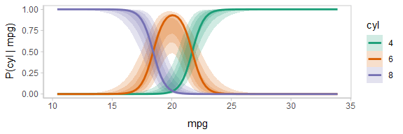
Notice how the lines move together, and how they move up or down together or in opposition. We could take a slice through these lines at an x position in the above chart (say, mpg = 20) and look at the correlation between them using a scatterplot matrix:
tibble(mpg = 20) %>%
add_epred_rvars(m_cyl, value = "P(cyl | mpg = 20)", columns_to = "cyl") %>%
# to draw the scatterplots we need to go back to long-data-frame-of-draws format
unnest_rvars() %>%
ungroup() %>%
select(.draw, cyl, `P(cyl | mpg = 20)`) %>%
gather_pairs(cyl, `P(cyl | mpg = 20)`, triangle = "both") %>%
filter(.row != .col) %>%
ggplot(aes(.x, .y)) +
geom_point(alpha = 1/50) +
facet_grid(.row ~ .col) +
ylab("P(cyl = row | mpg = 20)") +
xlab("P(cyl = col | mpg = 20)")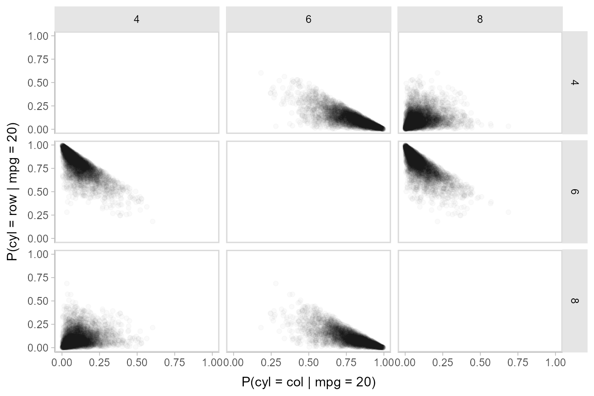
While talking about the mean for an ordinal distribution often does not make sense, in this particular case one could argue that the expected number of cylinders for a car given its miles per gallon is a meaningful quantity. We could plot the posterior distribution for the average number of cylinders for a car given a particular miles per gallon as follows:
\[ \textrm{E}[\textrm{cyl}|\textrm{mpg}=m] = \sum_{c \in \{4,6,8\}} c\cdot \textrm{P}(\textrm{cyl}=c|\textrm{mpg}=m) \]
Given the matrix form of the output of add_epred_rvars() (i.e. when we do not use columns_to), this quantity is just the dot product of P(cyl|mpg) with c(4,6,8). Since the rvar format supports math operations, including matrix multiplication (as the %**% operator), we can transform the prediction column into an expectation easily. Here is an example on two rows:
tibble(mpg = c(21,22)) %>%
# note we are *not* using `columns_to` anymore
add_epred_rvars(m_cyl, value = "P(cyl | mpg)") %>%
mutate(cyl = `P(cyl | mpg)` %**% c(4,6,8))## # A tibble: 2 x 3
## mpg `P(cyl | mpg)`[,"4"] [,"6"] [,"8"] cyl[,1]
## <dbl> <rvar[,1]> <rvar[,1]> <rvar[,1]> <rvar[,1]>
## 1 21 0.36 ± 0.16 0.61 ± 0.16 0.027 ± 0.035 5.3 ± 0.34
## 2 22 0.72 ± 0.16 0.27 ± 0.16 0.008 ± 0.015 4.6 ± 0.34Altogether, followed by unnest_rvars() so we can create spaghetti plots:
label_data_function = . %>%
ungroup() %>%
filter(mpg == quantile(mpg, .47)) %>%
summarise_if(is.numeric, mean)
data_plot_with_mean = mtcars_clean %>%
data_grid(mpg = seq_range(mpg, n = 101)) %>%
# NOTE: use of ndraws = 100 here subsets draws for the creation of spaghetti plots;
# DOT NOT do this if you are making other chart types like intervals or densities
add_epred_rvars(m_cyl, value = "P(cyl | mpg)", ndraws = 100) %>%
# calculate expected cylinder value
mutate(cyl = `P(cyl | mpg)` %**% c(4,6,8)) %>%
# transform in long-data-frame-of-draws format for making spaghetti plots
unnest_rvars() %>%
ggplot(aes(x = mpg, y = cyl)) +
geom_line(aes(group = .draw), alpha = 5/100) +
geom_point(aes(y = as.numeric(as.character(cyl)), fill = cyl), data = mtcars_clean, shape = 21, size = 2) +
geom_text(aes(x = mpg + 4), label = "E[cyl | mpg]", data = label_data_function, hjust = 0) +
geom_segment(aes(yend = cyl, xend = mpg + 3.9), data = label_data_function) +
scale_fill_brewer(palette = "Set2", name = "cyl")
plot_grid(ncol = 1, align = "v",
data_plot_with_mean,
fit_plot
)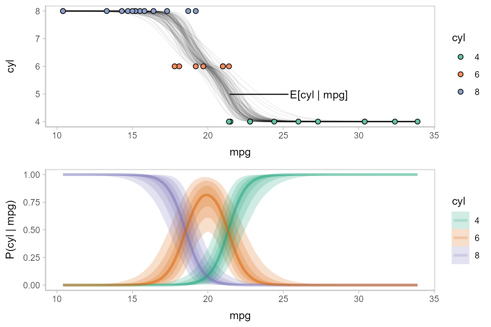
Now let’s add on a plot of the latent linear predictor against the thresholds used to determine the probabilities for each category. We can use posterior::as_draws_rvars() to get parameters from the model as rvar objects:
draws_cyl = m_cyl %>%
tidy_draws() %>%
as_draws_rvars()
draws_cyl## # A draws_rvars: 1000 iterations, 4 chains, and 10 variables
## $b_Intercept: rvar<1000,4>[2] mean ± sd:
## [1] -38 ± 12 -33 ± 11
##
## $b_mpg: rvar<1000,4>[1] mean ± sd:
## [1] -1.8 ± 0.57
##
## $disc: rvar<1000,4>[1] mean ± sd:
## [1] 1 ± 0
##
## $lp__: rvar<1000,4>[1] mean ± sd:
## [1] -13 ± 1.3
##
## $accept_stat__: rvar<1000,4>[1] mean ± sd:
## [1] 0.94 ± 0.081
##
## $stepsize__: rvar<1000,4>[1] mean ± sd:
## [1] 0.31 ± 0.043
##
## $treedepth__: rvar<1000,4>[1] mean ± sd:
## [1] 2.7 ± 0.66
##
## $n_leapfrog__: rvar<1000,4>[1] mean ± sd:
## [1] 9.1 ± 5.1
##
## # ... with 2 more variablesWe’re really interested in the b_Intercept parameter, which represents thresholds on the latent linear predictor:
beta = draws_cyl$b_Intercept
beta## rvar<1000,4>[2] mean ± sd:
## [1] -38 ± 12 -33 ± 11We can use add_linpred_rvars() analogously to add_epred_rvars() to get the latent linear predictor. We’ll combine this with the thresholds in beta, subtracting beta[1] from the linear predictor and from the other threshold, beta[2], as these values are all highly correlated (thus are hard to visualize with uncertainty in a meaningful way without looking at their differences). We’ll also demonstrate the use of .width = ppoints(XXX) on a lineribbon where XXX is a number like 30 or 50, which combined with a low alpha value produces gradient-like lineribbons:
beta_2_color = brewer.pal(n = 3, name = "Dark2")[[3]]
beta_1_color = brewer.pal(n = 3, name = "Dark2")[[1]]
thresholds_plot = mtcars_clean %>%
data_grid(mpg = seq_range(mpg, n = 101)) %>%
add_linpred_rvars(m_cyl) %>%
ggplot(aes(x = mpg)) +
stat_dist_lineribbon(
aes(dist = beta[2] - beta[1]),
color = beta_2_color, fill = beta_2_color,
alpha = 1/30, .width = ppoints(30),
size = 1, linetype = "21"
) +
geom_line(aes(y = 0), size = 1, color = beta_1_color, linetype = "21") +
stat_dist_lineribbon(
aes(dist = .linpred - beta[1]),
fill = "black", color = "black",
alpha = 1/30, .width = ppoints(30)
) +
labs(y = expression("linear predictor" - beta[1])) +
annotate("label",
label = "beta[1]", parse = TRUE,
x = max(mtcars_clean$mpg), y = 0, hjust = 0.8,
color = beta_1_color
) +
annotate("label",
label = "beta[2] - beta[1]", parse = TRUE,
x = max(mtcars_clean$mpg), y = median(beta[2] - beta[1]), hjust = 0.9,
color = beta_2_color
) +
coord_cartesian(ylim = c(-10, 10))
plot_grid(ncol = 1, align = "v", axis = "lr",
data_plot_with_mean,
fit_plot,
thresholds_plot
)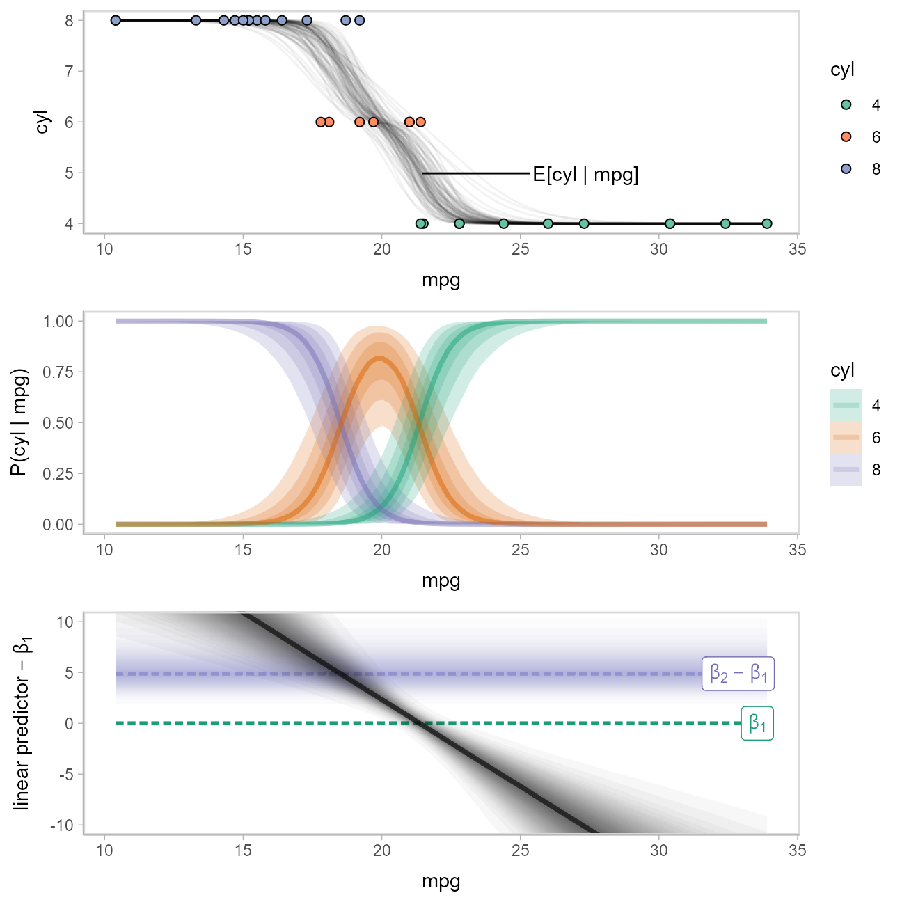
Note how when the linear predictor intersects the line for beta[1] categories 1 and 2 are equally likely, and when it intersects the line for beta[2] categories 2 and 3 are equally likely.
For more examples with this model using the long-data-frame-of-draws workflow (which can be easier for certain tasks), see the corresponding section of vignette("tidy-brms").
Ordinal model with categorical predictor
Here’s an ordinal model with a categorical predictor:
data(esoph)
m_esoph_brm = brm(
tobgp ~ agegp,
data = esoph,
family = cumulative(),
file = "models/tidy-brms_m_esoph_brm.rds"
)Then we can plot predicted probabilities for each outcome category within each level of the predictor:
esoph %>%
data_grid(agegp) %>%
add_epred_rvars(m_esoph_brm, columns_to = "tobgp") %>%
ggplot(aes(x = agegp, color = tobgp)) +
stat_dist_pointinterval(aes(dist = .epred), position = position_dodge(width = .4)) +
scale_size_continuous(guide = "none") +
scale_color_manual(values = brewer.pal(6, "Blues")[-c(1,2)])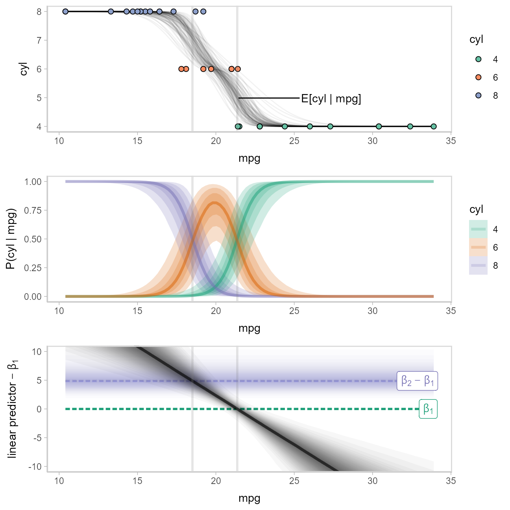
It is hard to see the changes in categories in the above plot; let’s try something that gives a better gist of the distribution within each year:
esoph_plot = esoph %>%
data_grid(agegp) %>%
add_epred_rvars(m_esoph_brm, columns_to = "tobgp") %>%
ggplot(aes(y = tobgp)) +
coord_cartesian(expand = FALSE) +
facet_grid(. ~ agegp, switch = "x") +
theme_classic() +
theme(strip.background = element_blank(), strip.placement = "outside") +
ggtitle("P(tobacco consumption category | age group)") +
xlab("age group")
esoph_plot +
geom_col(aes(x = median(.epred)), fill = "gray65", width = 1, color = "white") +
stat_dist_pointinterval(aes(dist = .epred))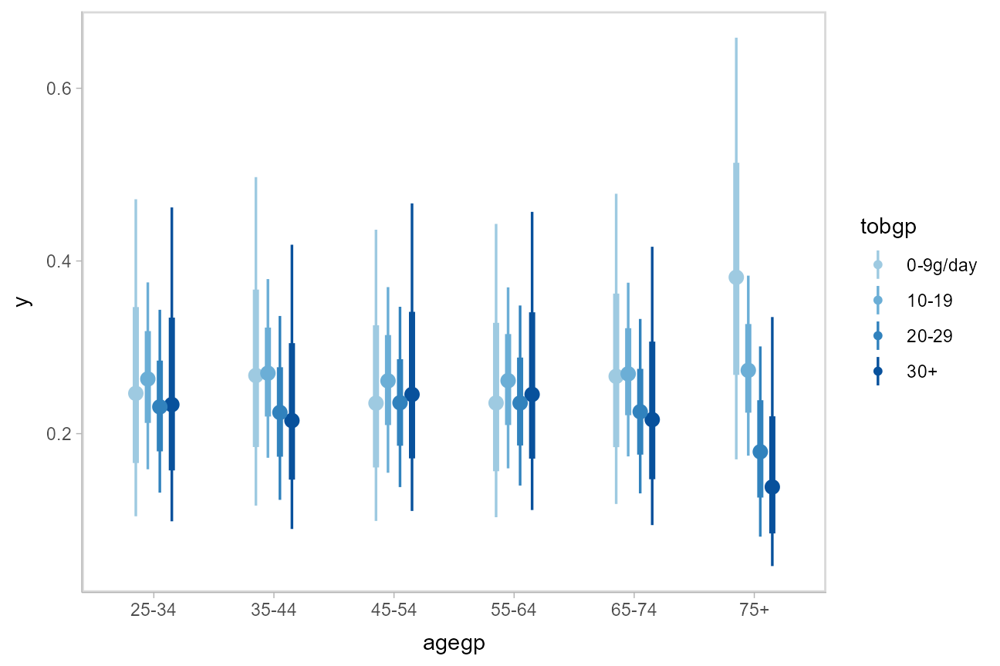
The bars in this case might present a false sense of precision, so we could also try CCDF barplots instead:
esoph_plot +
stat_dist_ccdfinterval(aes(dist = .epred)) +
expand_limits(x = 0) #ensure bars go to 0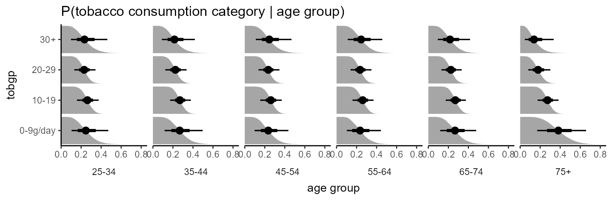
This output should be very similar to the output from the corresponding m_esoph_rs model in vignette("tidy-rstanarm") (modulo different priors), though brms does more of the work for us to produce it than rstanarm does.